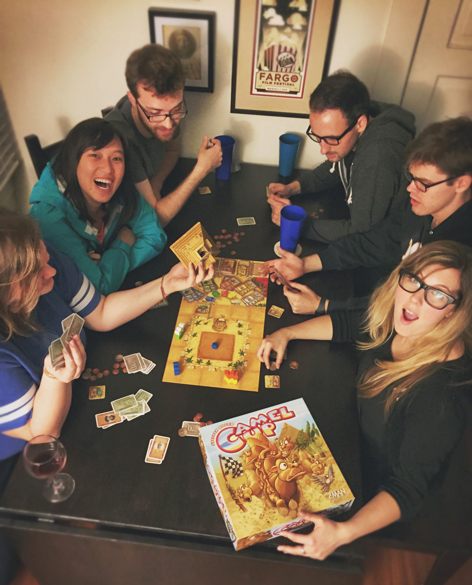

Comunidade
Seja bem vindo, e venha participar da comunidade de tabuleiristas :)

Conheça alguns
Os boardgames que nada mais são que os jogos de tabuleiro, teve início em meados dos anos 60, quando designers alemães começaram a desenvoler jogos com temáticas mais elaboradas.
Carcassone: Jogo alemão de estratégia, durante o jogo há a possibilidade de atrapalhar o adversário para benefício próprio, dificultando os planos do outro jogador e montando sua estratégia em cima disso.